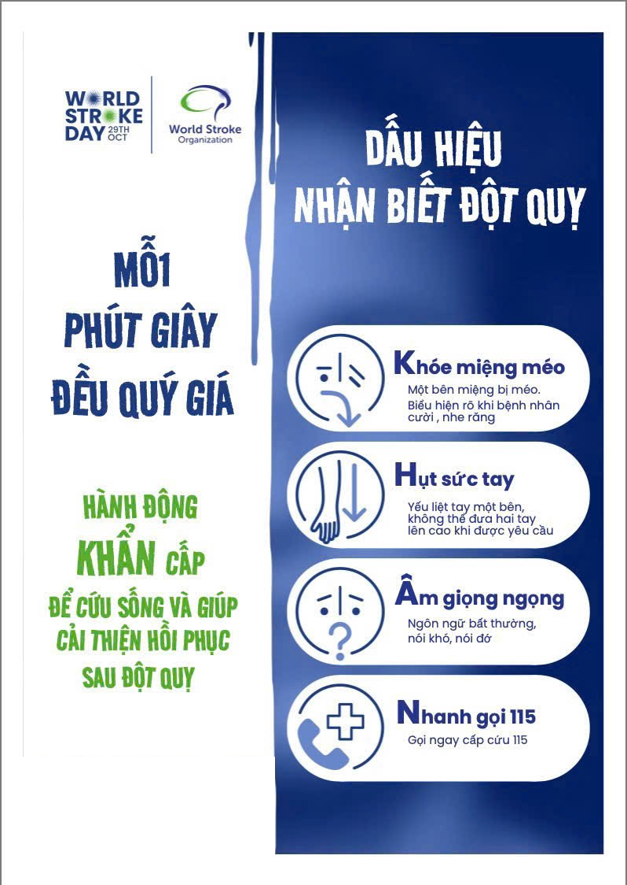

Nếu đang nghi ngờ đột quỵ
Gọi 115 ngay hoặc đưa người bệnh đến cơ sở GẦN NHẤT có khả năng điều trị đột quỵ
Không chờ triệu chứng tự hết, không tự lái xe nếu tình trạng nặng. Ghi lại thời điểm khởi phát và gọi trước cho bệnh viện để xác nhận khả năng tiếp nhận.
Khoảng cách trên thẻ là khoảng cách đường thẳng. Nhấn “Chỉ đường” để xem quãng đường di chuyển thực tế.
Chỉ hiển thị — cơ sở đã có toạ độ xác định. Xem đầy đủ — cơ sở ở chế độ Danh sách.

Không thể tải poster dấu hiệu đột quỵ.
Nếu người bệnh méo miệng, yếu tay hoặc nói khó, hãy gọi 115 ngay.
Đã nhận ra dấu hiệu? Đừng chần chừ.
Nguồn: World Stroke Organization · Hội Đột Quỵ Việt Nam (VNSA). Nội dung mang tính tham khảo, không thay thế chẩn đoán y khoa.
* Website cập nhật lúc: —
* Bệnh nhân và người nhà cần liên hệ với bệnh viện qua số hotline trước khi đến. Dữ liệu được Hội Đột Quỵ Việt Nam cập nhật định kỳ. Xem dữ liệu bệnh viện dạng máy đọc.